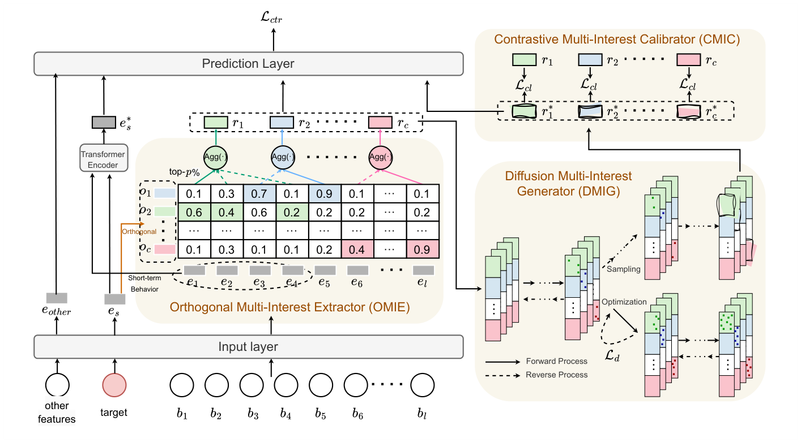

Modeling Long-term User Behaviors with Diffusion-driven Multi-interest Network for CTR Prediction (扩散驱动多兴趣网络的长周期用户行为建模)
- 会议/期刊: RecSys 2025
- 作者与机构: Weijiang Lai, Beihong Jin 等（中科院软件所/国科大）；Yapeng Zhang, Jian Dong, Jun Lei, Xingxing Wang（美团）
- 推荐链路定位: 精排（CTR 预估）
- 研究方向: CTR 预估与特征交叉 / 生成式推荐
- 论文原文: https://arxiv.org/abs/2508.15311v2
- 开源代码: https://github.com/laiweijiang/DiffuMIN
TL;DR (1分钟核心速览)
长周期行为建模的两阶段范式（SIM/TWIN 等）只按"与目标相似度"单视角筛选行为，导致兴趣同质冗余、潜在兴趣空间被压缩。DiffuMIN 先用目标嵌入的正交分解构造 \(c\) 个兴趣通道，把行为 top-1 路由到通道并聚合出多路"聚合兴趣"；再用以"上下文兴趣 + 兴趣通道"为双条件的扩散模块生成"增强兴趣"，并以对比学习校准。在 Alibaba/Ele.me/工业三数据集上 AUC 相对 DIN(S) 提升 13.96%/7.26%/5.80%，线上 A/B 的 CTR +1.52%、CPM +1.10%，推理仅从 33ms 增至 35ms。
Background & Motivation (背景与核心矛盾)
- 主流范式: 长序列建模已从单阶段（SDIM/LinRec 的简化注意力）演进到两阶段——先按目标相似度检索 top-\(k\) 行为，再对子序列精细建模（SIM、ETA、TWIN、TWIN-v2）。
- 前人局限: ① 两阶段的第一阶段只从"目标相似度"单一视角筛选，取回的行为高度同质，多兴趣被压成单兴趣；② 单阶段简化注意力虽快，却难以刻画长序列中耦合的兴趣结构，且噪声行为淹没关键信号。
- 核心洞察 (Key Insight): 长周期行为本身蕴含丰富兴趣，问题不在"筛得不够狠"，而在"筛得太窄"——过滤机制天然限制了兴趣空间的上界，需要"先解耦保留、再生成外推"。
- 本文切入点: 用目标的正交分解把"目标"本身拆成多个正交兴趣方向作为路由锚点，实现多视角解耦抽取；再用扩散模型在兴趣分布内生成增强兴趣，突破过滤带来的空间收缩。
Method (核心方法设计)
1. 整体框架 (Overall Architecture)
输入为完整长行为序列嵌入矩阵 \(E\in\mathbb{R}^{l\times d}\)、目标嵌入\(e_s\)与其余特征。近期\(k\)条行为经 Transformer 编码得到短期兴趣\(e_s^*\)；完整序列与\(e_s\)进入 OMIE，经正交分解得兴趣通道、行为路由与通道过滤，聚合出\(c\)路聚合兴趣\(r=[r_1,\dots,r_c]\)；DMIG 以\(r\)与通道\(o_i\)为条件做扩散采样，生成\(c\)路增强兴趣\(r^*\)；CMIC 用对比损失对齐\(r\)与\(r^*\)；最后\([r, r^*, e_{other}, e_s^*]\) 拼接进 MLP 输出点击概率。训练时扩散优化与采样两阶段均执行，推理时仅执行采样。
flowchart TD
A["长行为序列 E + 目标 e_s"] --> B["OMIE: 目标正交分解→兴趣通道→top-1路由→top-p%过滤→聚合"]
A --> C["Transformer 编码近期 k 条行为"]
B --> D["DMIG: 双条件扩散生成增强兴趣 r*"]
D --> E["CMIC: 聚合兴趣 vs 增强兴趣 对比对齐"]
B --> F["MLP 预测层"]
C --> F
E --> F
2. 关键设计拆解 (Key Designs)
-
OMIE 目标导向正交多兴趣抽取：痛点是用行为间自注意力抽多兴趣复杂度高、且与 CTR 目标脱节。做法是先线性投影 \(e_s' = e_s W\)，再求正交基\(O=[o_1,\dots,o_c]\)使\(\|e_s' - O^{\top}Oe_s'\|^2\)最小且\(O^{\top}O=\mathbf{I}\)，即把目标拆成\(c\)个正交兴趣方向；随后算相关性矩阵\(A=EO^{\top}\)，用 top-1 路由\(\Phi_{i,j}=\mathbb{I}[j=\arg\max_{j'}A_{i,j'}]\)保证每条行为只归属一个通道（抑制通道间冗余），再在每通道内保留 top-\(p\%\)行为做均值聚合得\(r_j\)。正交约束是"去冗余"的几何保证，top-1 硬路由则让每个兴趣方向获得纯净的行为证据。
-
DMIG 双条件扩散兴趣生成：痛点是过滤后的聚合兴趣仍只是兴趣空间的一个受限子集。前向过程按标准 DDPM 加噪 \(r_{i,t}=\sqrt{\bar\alpha_t}r_{i,0}+\sqrt{1-\bar\alpha_t}\epsilon\)；反向去噪网络\(\epsilon_\theta\)以 Transformer 为骨干，用自注意力把\(r_{i,t}\)与上下文兴趣\(g_1=[r_1,\dots,r_{i-1},r_{i+1},\dots,r_c]\)交互（锚定用户个性化），用交叉注意力把\(r_{i,t}\)与兴趣通道\(g_2=o_i\)交互（锚定目标导向的兴趣类型）。关键改动是采样起点不用高斯噪声，而是对\(r_i\)前向扰动到\(t\)步后仅用\(T'\ll T\)步反演，既保留个性化又缩短采样链。损失为\(\mathcal{L}_d=\frac{1}{c}\sum_i\mathbb{E}\|\epsilon-\epsilon_\theta(r_{i,t},t,g_1,g_2)\|_2^2\)。
-
CMIC 对比校准与训练目标：扩散生成可能偏离真实偏好，故将同一用户的 \(r_i\)与其\(r_i^*\)作正对、mini-batch 内其他用户的\(r_i^{*(v)}\)作负对，在投影空间中优化\(\mathcal{L}_{cl}=-\frac{1}{c|\mathcal{U}|}\sum_u\sum_i\log\frac{\exp(\mathrm{sim}(r_i^{(u)},r_i^{*(u)})/\tau)}{\sum_{v\in\mathcal{U}}\exp(\mathrm{sim}(r_i^{(u)},r_i^{*(v)})/\tau)}\)，负样本为 in-batch 免采样。总损失\(\mathcal{L}=\mathcal{L}_{ctr}+\lambda_1\mathcal{L}_d+\lambda_2\mathcal{L}_{cl}\)，其中\(\mathcal{L}_{ctr}\)为 BCE。时间开销约\(O(blcd)\)（\(c\ll l\)、\(T'\) 小），与现有长序列模型同量级。
Experimental Setup & Evaluation Protocol (实验设置与评估协议)
- 数据集与预处理:
| 数据集 | #Users | #Items | #Samples | 特征/场景说明 |
|---|---|---|---|---|
| Industry | 84,262,000 | 16,624,521 | 1,061,530,787 | 美团工业集，近 7 天活跃用户近一年完整行为 |
| Alibaba | 1,141,729 | 461,527 | 700,000,000 | 阿里展示广告 22 天购物行为 |
| Ele.me | 14,427,689 | 7,446,116 | 128,000,000 | 饿了么 30 天点击日志，含时空特征 |
- 数据划分与防穿越 (Splitting Strategy): 按各数据集原始时间跨度组织样本，长行为序列最大长度分别设为 5000 / 1500 / 50（不足补零），未额外声明随机划分细节。
- 排名评测协议 (Ranking Protocol): 采用 CTR 场景标准的 AUC（点级二分类，非全库排序），并报告相对提升 \(\text{RelaImpr}=(\frac{\text{AUC}_{model}-0.5}{\text{AUC}_{base}-0.5}-1)\times 100\%\)；线上用 CTR 与 CPM。
- 对比基线与超参设置: 基线含 DIN/CAN（短序列版 DIN(S)/CAN(S) 与长序列版）、SIM（SoftSIM/HardSIM）、ETA、SDIM、TWIN、TWIN-v2；特征维度统一 \(d=8\)，Adam，训练 1 epoch；DiffuMIN 最优配置\(c=4\)、\(T'=20\)、\(\tau=0.05\)、\(\lambda_1=0.01\)、\(\lambda_2=0.001\)，每通道保留 top-20% 行为；AUC 提升 0.001 即视为显著，并做\(p<0.05\)的\(t\) 检验。
Key Experimental Results (实验关键数据)
1. 主实验对比 (Main Results)
| 数据集 | DIN(S) | SIM(Hard) | ETA | SDIM | TWIN | TWIN-v2 | DiffuMIN | Improv. |
|---|---|---|---|---|---|---|---|---|
| Industry | 0.6740 | 0.6780 | 0.6778 | 0.6779 | 0.6785 | 0.6788 | 0.6841 | +5.80% |
| Alibaba | 0.6125 | 0.6239 | 0.6220 | 0.6206 | 0.6215 | 0.6220 | 0.6282 | +13.96% |
| Ele.me | 0.6363 | 0.6389 | 0.6398 | 0.6404 | 0.6410 | 0.6400 | 0.6462 | +7.26% |
（Improv. 为相对 DIN(S) 的 RelaImpr；三数据集上 DiffuMIN 均为最优，且 \(t\) 检验显著。）
2. 消融实验 (Ablation Study)
| 变体 | Industry | Alibaba | Ele.me |
|---|---|---|---|
| DiffuMIN | 0.6841 | 0.6282 | 0.6462 |
| A: 单视角相似度过滤替代 OMIE | 0.6810 | 0.6257 | 0.6433 |
| B: 预测层去掉多路聚合兴趣 | 0.6769 | 0.6221 | 0.6385 |
| C: 去掉 CMIC | 0.6834 | 0.6274 | 0.6450 |
| D: 去掉 DMIG + CMIC | 0.6826 | 0.6260 | 0.6448 |
| E: 去掉短期兴趣建模 | 0.6812 | 0.6250 | 0.6450 |
3. 关键实验发现 (Key Findings)
- 多兴趣解耦是最大增益源：变体 B（预测层丢弃多路聚合兴趣）在 Industry 上掉 0.0072，是全部消融中跌幅最大项；变体 A（退回单视角相似度过滤）也掉 0.0031，说明"正交通道 + 多路保留"而非"筛得更准"才是收益主因。
- 扩散生成与对比校准互补而非冗余：去掉 CMIC 掉 0.0007，去掉 DMIG+CMIC 掉 0.0015，即 DMIG 单独贡献约 0.0008；同时 DiffuMIN-VAE 在 Industry/Ele.me 上分别仅 0.6830/0.6444，验证扩散（仅优化条件分布、无后验坍缩）优于 VAE 的生成范式。
- 双条件引导与"扰动起点"缺一不可：去掉上下文兴趣引导（W）或通道引导（X）均掉点，两者同时去掉（Y）掉点更多；直接从高斯噪声起采（Z）在相同 \(T'\) 下明显更差，需更多采样步才能追平，印证"扰动兴趣作起点"同时提升质量与效率。
Highlights & Limitations (亮点、对比与审稿批判)
- 与代表作对比 (vs. Prior Work): 与 SIM/TWIN 的本质区别在于第一阶段不再输出"一条与目标最像的子序列"，而是输出 \(c\) 条正交方向上的兴趣证据，从"压缩"转为"解耦保留"；与 Octopus 等召回侧多兴趣模型相比，本文的通道由目标正交分解动态生成而非固定初始化，且面向 CTR 精排而非候选召回；与 DiffRec/DreamRec 等扩散推荐相比，本文首次把扩散用于 CTR 的用户兴趣而非物品/序列，且以兴趣通道为条件做目标导向生成。
- 可迁移亮点: ① "目标正交分解 → 通道路由 → top-\(p\%\) 过滤"是一套轻量、可插拔的多视角行为筛选算子，可直接替换 SIM 的第一阶段；② "扰动真实表征作扩散起点 + 少步反演"是降低扩散在线开销的通用技巧，适合任何需要实时生成的推荐模块。
- 审稿级局限批判: ① 扩散采样虽仅 \(T'=20\)步，但每步含自注意力与交叉注意力，序列极长或\(c\)增大时开销会非线性上升，论文仅给出 33ms→35ms 的单场景数据；② 正交分解依赖对目标嵌入做线性投影后求解正交基，\(c\)与 top-\(p\%\)均需逐数据集调参（\(c\in\{2,4,8\}\)），跨场景鲁棒性缺乏敏感性分析；③ 离线仅用 AUC 点级指标，未报告全库排序或校准指标，与真实排序收益的对应关系偏弱。
Rating (四维评分)
- 方法创新性 (Novelty): ⭐⭐⭐⭐ （正交分解构造兴趣通道 + 双条件扩散生成兴趣，两条线在 CTR 场景均为首次组合，几何直觉清晰）
- 评估协议与实验扎实度 (Protocol & Experiments): ⭐⭐⭐⭐ （三数据集含十亿级工业集、8 个 SOTA 基线、消融与 7 天线上 A/B 齐全，但仅 AUC 点级指标、缺敏感性分析）
- 写作与数学规范度 (Clarity & Rigor): ⭐⭐⭐⭐ （OMIE/DMIG/CMIC 公式链条完整、复杂度分析到位，扩散部分基本沿用 DDPM 标准记号，增量说明清楚）
- 工业落地与复现价值 (Industrial & Practical Value): ⭐⭐⭐⭐⭐ （代码开源、线上替换 SIM 即得 CTR +1.52%/CPM +1.10%、推理仅 +2ms，落地证据充分）